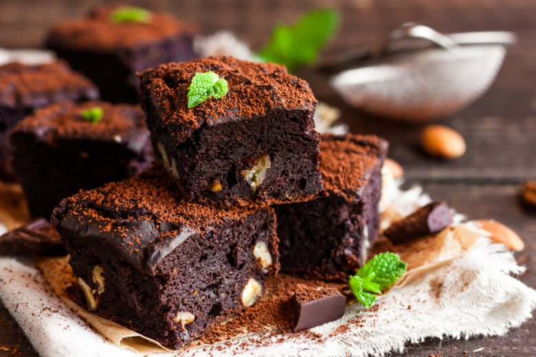
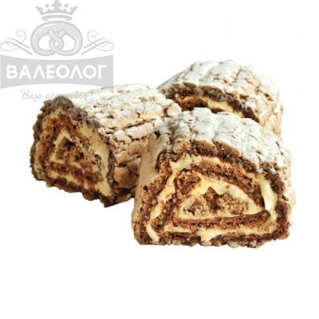
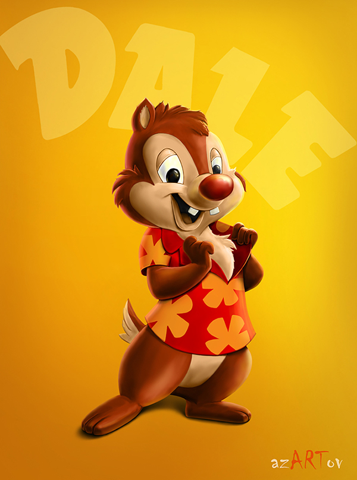

|
Chocolate brownie
A chocolate brownie is a square or rectangular, chocolate baked treat. Brownies come in a variety
of forms and may be either fudgy or cakey, depending on their density. They may include nuts, frosting,
cream cheese, chocolate chips, or other ingredients. A variation made with brown sugar and vanilla
rather than chocolate in the batter is called a blond brownie or blondie. The brownie was developed in
the United States at the end of the 19th century and popularized in the U.S. and Canada during the first
half of the 20th century.
Brownies are a form of sheet cookie. They are typically eaten by hand, often accompanied by milk, served
warm with ice cream (a la mode), topped with whipped cream, or sprinkled with powdered sugar and fudge.
In North America they are common homemade treats and they are also popular in restaurants and coffeehouses.
The Mexican version adds vanilla bean paste, cayenne pepper and ground cinnamon.
|
|